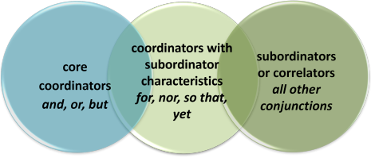
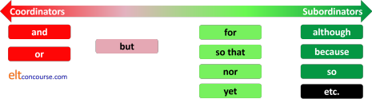

Clausal coordination

It would be useful if you have followed the general guide in this area which distinguishes between coordination and subordination. Other relevant guides can be tracked via the index to syntax: clauses, phrases and sentences. Those links open in new tabs.
 |
The core coordinators: and, or, but |
Traditionally, the central coordinators in English are identified as and, or and but. To that list, some would add for (in its meaning of because), yet, nor, so and so that. All other conjunctions then fall into the class of correlators or subordinators. However, there are differences hidden in this simplicity which are important.
It is a simple enough matter to place the conjunctions and
and or firmly in the camp of coordinators proper for a
number of reasons revealed by the structure of the sentences in
which they occur.
There are five tests to apply to a conjunction to distinguish
coordination from subordination.
Here they are:
 |
Coordinators can join two subordinate clause as well as two main clauses |
We can have:
John came home
and cooked
a meal
with two main clauses, the subject ellipted from the second,
and
Because John was so tired when he came home, he decided not
to cook and went straight to
bed and fell fast asleep immediately
with a main clause and three subordinate clauses connected with
and
We can also have:
He'll arrive late
or he'll be very early
with two main clauses in which it is optional to ellipt the verb
phrase (He'll arrive late or very early))
and
If the train times are awkward, John will arrive late
or he'll be very early or, of
course, he won't come at all
with a main clause and three subordinate clauses joined by
or)
In theory, at least, there is no limit to the number of subordinate
clauses which can be joined like this.
The conjunction but can link subordinate clauses but
a maximum of two clauses is allowable. So we can allow:
Mary said that she would come to the dinner
but could be late
but not:
*Mary said that she would come to the dinner
but could be late but would try to be on time.
Subordinating conjunctions can't do
this at all:
*John was tired because it was late because he had been
working
must be rephrased:
John was tired because it was late
and because he had been
working
The clause which begins with the coordinator is fixed in position |
We can have:
John came home and he cooked a meal
I'll take the train or John can give me a lift
but not
*And he cooked a meal John came home
*Or John can give me a lift I'll take the train
*But you were out I called by
*For she would be angry I said nothing
*So that I could see the footsteps it had snowed
*Nor I didn't want to come stay at home
*Yet she was generous she didn't have much money
This is not true for
subordinating
conjunctions:
Although he was tired he gave me a lift home
He gave me a lift home although he was tired
where the reversal of the clauses results in no loss of
meaning, although the emphasis is slightly different.
 |
Coordinating conjunctions cannot be preceded by another conjunction |
It is not possible to have:
*John gave me a lift but and he was tired
*She phoned and but I was out
*I said nothing so for I knew she would be angry
and so on.
This is not true for
subordinating
conjunctions so we allow:
John gave me a lift although he was tired and although it
was late
He gave me a lift because it was late or because he took pity on
me
We can leave out the subject in the second clause if it refers to the same entity |
It is possible to have:
John came home and cooked a meal
John went on holiday or took a break at home
ellipting the subject the second
time in both examples.
This is not true for
subordinating
conjunctions:
*He took the train because the weather was cold and because
was wet.
 |
Coordinators can link multiple main clauses and we can omit the conjunction altogether until the end |
We can have:
I'll take the train, I'll catch a bus, I'll hitchhike
or
I'll drive.
He came home, fed the cat, cooked a meal, ate it in front of
the television and went to bed
This is not true for subordinating
conjunctions:
*He gave me the money, he had been to the bank, I needed it
then because I asked him.
BUT
Of the core coordinators, the conjunction but is slightly anomalous. It satisfies
3 of the 5
tests above but not numbers 1 (partially) and 5 because:
- It is limited to linking no more than two subordinate clauses (Test 1., see above)
- It cannot be used to link
multiple clauses and only appear before the last, so we
cannot have:
*He called, I was out, the telephone was not working but the neighbour took a message.
in which it fails Test 5.
The 5 (pseudo-) coordinators: for, so that, so, yet, nor |
That's all OK for the three core coordinators and, or, but. What about the other four?
- FOR
- The conjunction for to mean because is now
quite rare except in formal and academic writing. In this
sense, it shares some of the characteristics
of the three core coordinators.
- It can't link two subordinate clauses (so does
not pass
Test 1):
*Before he spoke to her he decided not to tell her for she would be angry - The conjunction is fixed in place between the two
clauses (so it passes Test 2) and we do not allow:
*For she would be angry he didn't tell her - It cannot be preceded by another conjunction (so passes
Test 3) and we do not allow:
*He was late and for his car had broken down - We can't leave out the subject in the second clause (so does
not pass
Test 4):
We can have:
I didn't tell her for I knew she would be angry
but not:
*I didn't tell her for knew she would be angry - It can't be left out in a string of clauses (so does
not pass
Test 5) and we do not allow:
*He got up early, ran to the station, caught the first train for he wanted to be in good time
- It can't link two subordinate clauses (so does
not pass
Test 1):
- SO THAT
- The conjunction has two distinct meanings and there are two other issues:
- Resultative meaning:
Here so that mean much the same as the subordinator so, with which it is often replaced, and refers to a result of an event or state but it is less common. It is a coordinator only in this sense.
The garden was covered in snow so that he could see the footprints clearly.
When used in this way, it shares the characteristics set out above for the conjunction for.
It cannot be preceded by another conjunction (so passes Test 3) and we do not allow:
*The garden was covered in snow and so that he could see the footprints clearly.
The clause it is part of cannot be moved so we do not allow:
*So that the garden was covered in snow he could see the footprints clearly.
In sum, the phrase passes tests 2 and 3 but fails tests 1, 4 and 5.
In this resultative meaning, the conjunction is often replaceable with the simpler so. But, because so is a subordinator, it can be preceded by another conjunction so we allow, e.g.:
The garden was covered in snow and so he was able to see the footprints clearly - Purposive meaning
Here it means much the same as in order that and this is the more common use. It is a subordinator in this sense, not a coordinator, and is treated as such in the guide to subordination, linked below
He arrived early so that he could prepare for the meeting.
or
So that he could prepare for the meeting, he arrived early.
The ability to swap the clauses around with the conjunction moving with the subordinate clause (Test 2) is a sure sign that it is a subordinator in this sense. Another sign is that we cannot ellipt the subject in the second clause (Test 4) and we cannot allow:
*So that he could prepare for the meeting, arrived early..
In this meaning, the conjunction is replaceable by the simpler so. - Ambiguity of meaning
It is possible that some ambiguity may arise. For example, does:
Someone stole my car so that I couldn't get to work
mean that someone stole the car in order to prevent me getting to work (subordinating) or is the result of the theft the fact that I couldn't get to work (coordinating)? - Non-conjunction use
The phrase so ... that can also be a modifier of an adjective or adverb when it means to the extent that as in, e.g.:
The flight was so late that I missed my connection
and in neither of these cases is the use of so or so ... that conjunctional. What is happening is that so is modifying the adverb or adjective and that is followed by a that-clause complement.
The word ordering matters because if the word so and that are separated or form a single conjunction, the meaning is radically different.
- Resultative meaning:
- YET and NOR
- also pass two of the tests for coordinators but not
others.
- They cannot join two subordinated clauses (so they do
not pass
Test 1) and we do not allow:
*He was tired yet he worked on yet the work wasn't easy
*She didn't want to go out nor have guests round nor watch a movie - The clauses they connect are in a fixed sequence (so
they pass Test 2):
We can have
He tried hard yet he failed
I don't want to see it nor do I want to read about it
but not
*Yet he tried hard he failed
*Nor do I want to see it I do not want to read about it - Both these conjunctions may appear with other
conjunctions (so they do not
pass Test 3) and we allow:
She is poor and yet she spends money on luxuries
They didn't like the food and nor did I - We can leave out the subject of the second clause
providing it is the same as the first, although we
frequently do not (so they pass Test 4):
He was angry yet didn't show it
He didn't want to see nor want to talk to her - They can't be left out in a string of clauses (so the do
not pass
Test 5):
*They started late, were delayed again yet arrived in time
*She didn't want to change the venue, delay the meeting nor cancel it
He didn't pay attention nor did he look interested
and not:
*He didn't pay attention nor he looked interested - They cannot join two subordinated clauses (so they do
not pass
Test 1) and we do not allow:
The conjunction so is generally a subordinator and does not appear in this list but it does have some coordinating characteristics because it can perform the same resultative function as so that. Here are the issues in brief:
- When so functions to signal a result, it can
replace so that and we allow, therefore:
The rain had eased a little so that he could go for a walk
and
The rain had eased a little so he could go for a walk
However, so that, as we saw, is a coordinator and we do not allow:
*The rain had eased a little and so that he could go for a walk
but we do allow:
The rain had eased a little and so he could go for a walk
because the conjunction serves to subordinate. - When it functions to signal a purpose, so is a subordinator and moves around with its clause.
For example:
So I could meet the new boss I came to the party
and
I came to the party so I could meet the new boss
are both acceptable.
Compare because in this respect.
We saw above that the phrase so that can also perform this purposive function and, when it does, it is synonymous with so and a subordinator. - the word is frequently a conjunct implying something
like It follows from what has
been said. In this case, the sense is not one of
cause and effect, it is one of summation, and the punctuation and intonation alerts the
hearer / reader to the function of the word. For example:
So, you think this will work, do you? - the word can be an emphasising adverb as in, e.g.:
The meal was so nice. Thanks very much.
in which is means more or less very.
The diagram from the general guide to subordination and coordination sums up the position. We have included but in the list of core coordinators because it passes nearly all the tests with one odd exception (Test 5).

We can also represent the relationship like this:

Here is a grid showing the characteristics of the conjunctions which are considered coordinators of one kind or another. From that, you can see that only and and or pass all five tests but all seven coordinators pass test 2.

Notes:
- The conjunction for in this grid means because.
- The conjunction but may only link a maximum of two subordinate clauses (see above).
- The conjunction so that is a coordinator when it refers to result (as here) but when it refers to purpose, it is a subordinator (meaning so) and fails all the tests.
 |
Coordination with and |
This may seem rather simple, and it often is but there are some
elements of coordination with and that exist in English and
do not in other languages.
The other issue is the ordering of the clauses. It is
sometimes said that clauses connected with and can usually be
reversed with no change in meaning. For example:
It is raining and it is cold
can be stated as
It is cold and it is raining
In fact, reversing the clauses more often than not creates nonsense
as we shall see.
- Commonalities
- It is unusual for two clauses to be connected with and
if they do not have something obvious in common. Compare,
for example,
She is very rich, lives in a large house and drives an expensive car
with
She is very rich, lives in a large house and doesn't understand thermodynamics
When the clauses do not exhibit commonalities, English prefers the use of a quasi-coordinator like as well as so we might allow:
?She is very rich and lives in a large house as well as not understanding thermodynamics - Consequences
- If one action is seen as a consequence of another, and
is often the coordinator of choice, especially in spoken English
(but it is not in other languages, many of which would reserve a
causal conjunction for this role). For example, in:
He saw the accident and called the ambulance
the clauses cannot be reversed without making nonsense because the sense of the coordinator is resultative and causes come logically before results. - Chronology
- Again, in English, and is often the coordinator of
choice when two events are seen to be chronologically connected.
For example:
John came home and cooked a meal
Reversing the clauses creates something surprising if not incomprehensible.
Again, many languages would prefer a subordinating time conjunction for this concept and even in English, many prefer to insert the temporal adverb then after and. - Commentary
- English speakers will often select and when what
follows is seen as a comment on the previous clause. For
example,
She was furious and I don't blame her
Reversing the clauses creates nonsense.
This can be rephrased using a disjunct such as:
She was furious. Rightly so, in my view.
Some languages simply won't do this and will use always a disjunct to express, e.g.:
She was furious and understandably so.
as:
She was furious. Clearly, there was a good reason. - Conditionality
- Especially in spoken English, native speakers will often
select and in preference to the traditionally taught
if-clause. For example,
Give me a lift and I'll buy you a drink later
Reversing the clauses creates nonsense.
We often insert then into these sentences after and to create the sense of conditionality. For example:
Let's leave now and then we can catch an earlier train
The first clause in such sentences is almost always an imperative or contains a modal auxiliary verb and the second clause contains a modal auxiliary verb as in, e.g.:
We must go quietly and then we won't wake him up
Let's leave now and then we can take the early train - Again, in many languages some kind of conditional marker
(conjunction or mood such as the subjunctive) would be preferred.
It is noteworthy that when the coordinator and is used in this way it actually becomes a subordinating conjunction (because conditional forms in English are subordinating forms). - Syndetic and Asyndetic coordination
- The first of these horrible terms means the inclusion of the
coordinator as in, for example:
Hot and exhausted, he gave up
Asyndetic coordination omits the conjunction and would be:
Hot, exhausted, he gave up.
This effect also occurs with clauses as in, e.g.:
Come over here, sit down, tell me all about it.
 |
Coordination with or |
This is again often considered a simple area but languages work slightly differently and what is allowable in English may not be in other languages.
Again, it is often averred that reversing the clauses makes no difference to the sense. Sometimes, doing so loses little but it should be noted that English speakers will often elect to put the preferred option first. In some cases, nonsense is created by reversing the clauses.
- Commonality
- This is even more important in this case because if the two
clauses are not connected, the sense is lost. For example:
I can fly or I can take the train
is acceptable, but
*I can fly or Rome is 400 kilometres away
is not. - Interpretation
- In English, or is exclusive. That means that
it connects two mutually incompatible ideas. This is not
the case in some languages. For example:
You can walk or I can take you in the car
clearly implies that both possibilities are not allowable at the same time.
When both possibilities are allowable, English speakers will often make that explicit. For example,
You can have the strawberry or the chocolate, or both, of course. - Conditionality
- As we saw above with and, the conjunction is often also
preferred to a traditional if-clause. The conjunction
or
can work similarly but has a negative sense and does not always carry the same imperative
force. For example:
They obviously didn't enjoy the play or they wouldn't have left early - instead of the more complex:
They wouldn't have left early if they had been enjoying the play
The conjunction can also work in conditional threats such as:
Pay me the money or I'll take you to court
instead of the conditional:
If you don't pay me the money, I'll take you to court
In both these cases, reversing the clauses connected with or creates nonsense (because it is a coordinator) but reversing the clauses connected with if is acceptable (because it is a subordinator).
 |
Coordination with but |
The coordinator but is often treated simple as a way of stating a
contrast. It often is but there's slightly more to it.
It can, of course be used discoursally to interrupt and present an
alternative viewpoint (the Yes, but ... event).
It is, however, used in two different ways:
- Contrast
- This is the familiar one exemplified in, for example:
I came to see you but you were out
contrasting hope with reality
I wanted to finish but the work took longer than I thought
contrasting plan with reality
It may seem that way but it's actually quite simple
contrasting appearance with reality
and so on.
The clauses can very rarely be sensibly reversed because the contrast is usually expressed in the second clause. - Confirmation
- The conjunction can also be a restatement and confirmation
of what has come before, implying no real contrast. For
example:
He didn't rush into to it but gave the move a good deal of thought
We mustn't assume he'll be late but work on that principle
 |
Ellipsis |
We saw above that the subject (providing it is the same subject) can be omitted when clauses are joined by some coordinators so we can:
- Omit the subject with and, or, nor, so, yet and but:
-
John came home and cooked a meal
She always arrived late or didn't arrive at all
She hardly spoke (n)or listened
He had enough money so stayed in a hotel
He did very little work yet passed the examination
She attended the meeting but said little
But we can't do this with for and so that:
*He was very tall so that could see over my head
*He told her a lie for knew the truth would hurt
(The third example in this list is somewhat controversial. An American user of the site (to whom gratitude is expressed) has has noted that AmE speakers do not use nor in combination with the negator hardly, preferring or in this sentence. However, the adverb hardly is generally perceived as strongly negative by many speakers of BrE so the use of the negative coordinator is acceptable (if often disparaged).) - Omit the auxiliary verb(s) if it applies to both main verbs
- She can come and tell us how to do
it
He has had his house painted and his car repaired
She has welcomed the children but been rude to their parents
But we can't do this with for and so that:
*He can stand on that box so that see over my head
*He could dive well as a child for hold his breath for four minutes - Omit the subject and the verb phrase when clauses are coordinated with and, but or or, only if the sentence contains an auxiliary and the mood, tense or aspect is unchanged:
- She can play the piano and the flute
She can come or go
It's hot here in July but wet in February
Peter went to the market and Mary to the pub
We cannot do this with the other conjunctions.
This is often the way in which writers and speakers can create what is called a zeugma when the verb senses do not match. For example:
She paid the bill but very little attention
which would normally be considered a joke of some sort. For more, see the guide to polysemy and homonymy (new tab). - Omit the whole of the predicate
- The boss will come to the party and his wife might
She can cook beautifully but her husband can't
 |
Forward and back: pronoun reference |
Ellipsis is normally anaphoric in these cases and the examples
above because the first clause has contained the recoverable data so
reference back to them can be made. For example, in:
The children came in and sat at the table
it is a simple matter to refer back to the first clause to identify
the fact that the children is the subject of sat
in the second clause.
Sometimes, complex ellipsis allows us to leave out a section of the
clause cataphorically and we must refer forward in the sentence to
recover the data as in, for example:
She can or should do the work
Here, the reader / listener has to refer forward in the
sentence to discover the main verb (do).
They ordered, ate and paid for the food.
In this case, the reader / listener has to refer forward to
discover the object of ordered and ate.
We saw above that we can omit the subject in some coordinated clauses
so we get, for example:
Mary was exhausted but worked on till six
in which it is clear that Mary is the subject of both clauses.
We cannot do this with subordination so we do not allow:
*Although Mary was very tired, worked on till six
However, coordinated clauses only allow anaphoric referencing of
pronouns (i.e., with reference to a previous noun).
Therefore, while we allow:
Mary was unhappy and she argued
(reference ←)
John arrived late but he didn't miss the
speeches (reference ←)
we do not allow:
She argued and Mary was unhappy
unless she and Mary refer to different people, or
He didn't miss the speeches but John arrived
late
unless he and John refer to different people.
There is, however, a little more to it than that because in a
sentence such as:
He was exhausted but John worked on till six
it is averred by some that he and John must refer
to different people. In other words, he cannot be a
cataphoric reference to John in a coordinated sentence.
This is somewhat questionable and the sentence is at best ambiguous
insofar as he and John could refer to the same
person or to different people depending on context and co-text.
With subordination, on the other hand, cataphoric reference is
assumed so in
Although he was exhausted, John worked on
till six
it is inevitable that he and John will be assumed
to be the same person.
 |
Quasi-coordinator prepositions |
These are complex prepositions which often coordinate items and they include, e.g., the ones highlighted in these examples:
I fixed the car as well as the
lawnmower
He came to the party along with most of his friends
from university
She likes you more than I do
He complains as much as his wife
The manager came to my retirement party accompanied by
most of the board
They can all be replaced with coordinators proper so we could equally have:
I fixed the car and the
lawnmower
He came to the party and so did most of his friends
from university
She likes you but I like you less
He complains and so does his wife
The manager and most of the board came to my
retirement party
but some sense is lost.
Grammatically, the terms function in a way closer to prepositions
than conjunctions because they are not all susceptible to being
followed by clauses so we cannot have:
*I fixed the car as well as I painted the
garage
*He came to the party along with his friends did too
*He came accompanied by his mother came
but the terms as much as and more than can join
clauses as we see above and in:
She helps as much as he hinders
They like Chinese food more than they like Indian food.
The suspicion is that these are called quasi-coordinating prepositions simply because it is difficult to consign them unequivocally to one class or another. Dictionary compilers have to call them something.
There are some issues with verb and pronoun concord with these expressions. See the guide to concord, linked below, for more.
 |
Adverb relative clause coordination |
Unlike relative pronoun clauses, which are subordinating, adverb
relative clauses also act as grammatical and semantic coordinators
so, for example, in:
Those were the shoes which they were wearing
when they got married
we have both sorts of relative clause:
- The pronoun relative clause:
which they were wearing - The adverb relative clause:
when they got married
We cannot remove the pronoun relative clause (because its
function is subordination) so:
Those were the shoes. They were wearing
when they got married
is malformed. However, removing the adverb relative clause is
permissible and leaves a well-formed pair of clauses:
Those were the shoes which they were wearing.
They got married
although some sense is lost, of course.
Adverb relative clauses can, therefore, perform a coordinating
function as in:
It was at that time when he realised the
truth
This is the house where he lived much of his life
Those were the three reasons why he was so angry
I did the work how I was instructed
etc.
 |
Teaching implications |
Coordination is often seen as simple, almost too simple to be taught. It is not.
 |
Coordination in other languages |
The ways in which languages deal with coordination are quite variable (although they all do it, of course) so the area needs some careful handling and concept checking. Here are a few examples:
- In German, and other Germanic languages, coordination occurs in similar ways to English
although the conjunctions used to coordinate equal-weight
clauses are different. The use of and to express
consequence or conditionality is vanishingly rare and will
confuse German speakers. For chronologically linked
clauses, German will usually insert a temporal conjunction
rather than rely on and. So, a speaker from a
Germanic-language background will often prefer the unnatural
He saw the accident then called the police
rather than
He saw the accident and called the police - In English, subordination is more common than coordination.
In Arabic the case is reversed so translations of texts from
Arabic into English sound simpler than they should be and in
reverse they sound more complex than is necessary.
Unlike the English and, the Arabic wa is repeated before every item coordinated with the one before, no matter how many items are listed. But the fact of the matter is that the Arabic wa is not one but several particles, each having a different function.
Coordination is the main key for coherence in Arabic, just like subordination in English.
(Othman, 2004) - In Japanese, the particle to is often considered an equivalent of and but, in fact, it can only be used to coordinate two noun phrases. Coordination of verb phrases or clauses is much more complex and results in unpredictable outcomes in English.
- Korean differs from English in
that it has very little true coordination. According to
some descriptions of Korean grammar, “[t]he distinction between
coordination and subordination is not clear-cut and is a matter
of degree”
... the ko-construction sometimes behaves as a coordinate structure, and sometimes, as a subordinate one.
(Polinsky, K and M, n.d) - In Spanish, there are a number of reduplicated conjunctions which coordinate clauses and these do not translate easily. For example, bien ... bien and fuera ... fuera are used where English settles for or or either ... or.
- In Italian and some other Romance languages the conjunctions because and so that may be realised with the same word (perché in Italian) and that can cause difficulties when using so that in English.
and so on. Languages differ quite dramatically in this area and it is perilous to assume that coordination will be understood and produced with any ease.
 |
Selecting what to teach |
It is clearly arguable that the core coordinators, and, but
and or should be the focus of teaching at any level.
To that list, most people would add the common subordinator so.
Not all the uses can be tackled at once, of course, and some of
them are probably better left until more advanced levels.
These include:
- the use of and and or to replace conditional structures and the constraints on clause type that we saw above
- the use of and to introduce a comment instead of the use of a disjunct of some kind
- The use of but as a confirmation of the previous clause rather than a contrast
There are, however, four main ideas which should be tackled at lower levels:
- The need for a commonality between the clauses
- The implication of chronological ordering with and (so no reversal of clause ordering)
- The idea of and used to express a consequence (so no reversal of clause ordering)
- The fact that coordinators must occur between ideas and are not integral to either clause in the way that subordinators are
If we don't focus on these four fundamental ideas, we may encourage errors even though the conjunctions work very similarly across a range of languages.
This leaves the four other coordinators: for, so that, yet and nor. None of these is particularly common.
- for, meaning because, is confined to formal texts and should probably only be taught for receptive purposes to those who need to access such texts.
- so that is rare as a coordinator but common as a subordinator expressing purpose. It should probably be confined to the latter use as it can almost always be replaced with so in its coordinating role.
- yet can normally be replaced with but and its use is uncommon. Again, for receptive purposes it may be worth addressing but it is formal and unusual in speech.
- nor as a coordinator is also rare and normally replaced by the correlator neither ... nor. Even for receptive purposes only, it's hard to make a case for teaching it except at quite high levels. The complication of the word ordering after nor is another reason for avoiding it until then.
 |
Teaching solutions |
The solution, as usual, is to ensure two things:
- Providing context so that the speaker's meaning is
transparent and it is clear e.g.:
- whether but is being used to contrast two ideas as in
I waited for hours but nobody arrived
or to confirm and support the first idea as in
He didn't work at all but just lay around watching TV - whether and is being used to join or to perform another function
such as suggesting consequence, chronological ordering or
conditionality. For example, in
He's a student and doesn't have much money
and is a simple logical connector but in:
Tell him that and he'll get really angry with you
it is expressing conditionality [If you tell him that he'll be really angry with you]
but in:
I heard the bang and went to see what had happened
the coordinator shows the chronological ordering of events [After I heard the bang I went to see what had happened]
but in:
The vase broke and spilled water all over my desk
the coordinator expresses consequence [Water was spilled all over my desk because the vase broke]
These uses will affect whether the clauses can safely be reversed. - whether so that and so are being used synonymously or whether
the use of so that is coordinating (a resultative) rather
than subordinating (a purposive use) in
The fog was thick so that I couldn't see him clearly (resultative)
I opened the window so that I could see him clearly (purposive)
because this will affect whether the clauses can be shifted around.
- whether but is being used to contrast two ideas as in
- Providing co-text so that it is clear what can be ellipted,
what must stay, what can be included and what can be moved to
avoid errors such as
- *We ate early for knew the restaurant closed at 7
- *So I could take a holiday, saved money carefully
- *They drove because the buses are unreliable and but the car broke down
Some comparative work translating in and out of first languages can be productive in this area and raise the learners' awareness of what is and is not possible in English. To do that successfully, of course you'll have to know or at least know about your learners' first language(s).
Comparisons, too, between acceptable and unsuccessful sentences in English can help learners see how the forms work and be productive. For example:
| Mark the sentences right or wrong and then see if you can say why | ||
| Sentence | Why is it wrong? | |
| Help me with this and I'll buy you a drink | ||
| I'll buy you a drink and help me with this | ||
| He telephoned the police and he saw the damage | ||
| He saw the damage and telephoned the police | ||
| He didn't have a holiday but worked to save money for next year | ||
| He had a holiday but worked to save money for next year | ||
| I can get her a present or take her to dinner | ||
| I can get her a present or it is her birthday | ||
There is also a need to be alert to your learners' production
and, instead of just noting that there is some kind of syntactical
error, consider whether it is caused by false coordination and treat
it accordingly.
Often, there is a temptation to fall back on the
because-it's-not-English explanation rather than look for a deeper
cause.
That cause is often found to be a lack of understanding of
coordination.
Pronunciation |
The central coordinators and and but are
usually reduced in connected speech, especially when it is quite
rapid and learners need to be alerted to the fact so that they can
both identify coordinated clauses and be able to produce
natural-sounding sentences.
Additionally, the usual issues around rhythm and stress in longer
sentences need to be addressed.
- and
is often reduced to /ənd/, /ən/, /nd/ or /n̩/ rather than appearing in its citation form /ænd/ so, for example:
She came and talked to me
may be pronounced as:
/ʃi.keɪm.ənd.ˈtɔːkt.tə.miː/
or
/ʃi.keɪm.ən.ˈtɔːkt.tə.miː/
or
/ʃi.keɪm.n̩.ˈtɔːkt.tə.miː/. - but
is often reduced to /bət/ or /bə/ rather than appearing in its citation form /bʌt/ so, for example:
She came but didn't talk to me
may be pronounced as:
/ʃi.keɪm.bət.ˈdɪdnt.ˈtɔːk.tə.miː/
or
/ʃi.keɪm.bə.ˈdɪdnt.ˈtɔːk.tə.miː/
Try a brief quiz on some of this.
| Related guides | |
| the word-class map | for links to guides to the other major word classes |
| subordination | for a similar guide to a related area |
| conjunctions | for a general guide to the word class |
| concord | for a consideration of coordination and concord |
| clauses, phrases and sentences | the index for this section with links to guides tackling many of the concepts in this one |
| coordination lesson | a lesson for higher-level learners |
| coordination exercise | an exercise on coordination for learners (and you) |
References:
Othman, W, 2004, Subordination and Coordination in English-Arabic
Translation, Al-Basaer, Vol. 8 – No. 2, 2004, pp.12 - 33 available
from http://www.translationdirectory.com/article899.htm
Polinsky, K and M, n. d., What does coordination look like in a
head-final language?, University of California, San Diego
available from
http://people.iq.harvard.edu/~nkwon/Papers/Asymmetry_Kwon_Polinsky.pdf
For Spanish: http://www.spanishbooster.com/SpanishConjunctions.htm